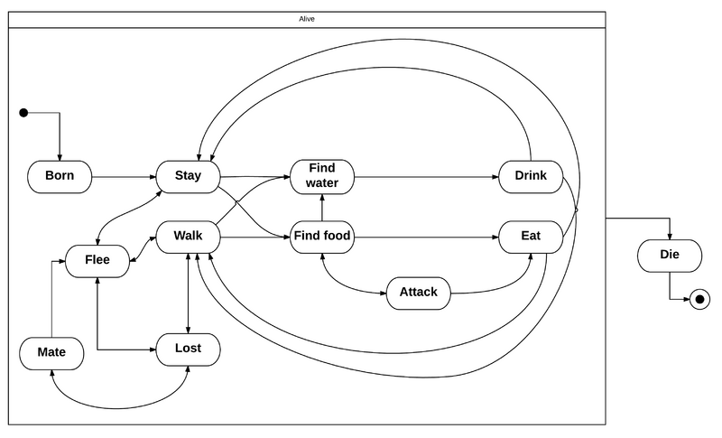

La gestion de la faune et la flore a été réalisée en utilisant des boids. Un boid est un agent autonome conscient de son environnement qui se déplace à l'aide de forces qui lui sont appliquées. Voici un exemple de boid pour le déplacement de groupe :
Afin d'améliorer le comportement des boids un automate d'état a été ajouté ainsi que des variables d'état telles que la faim, la soif et la fatigue. L'automate suivant est une version simplifiée de l'automate implémenté.
Rabbit mesh
Afin de peupler le monde plusieurs types de boids ont été créés :
Wolf mesh
Rabbit mesh
Tree mesh
Carrot mesh
Les arbres et les carottes ont été implémentés en utilisant des boids afin de pouvoir gérer pour chaque entité une zone de séparation différente. Ainsi un animal reste éloigné d'un arbre comme il le serait avec un autre animal afin de ne pas lui rentrer dedans.
Voici une liste non exhaustives de comportements associé aux différents boids :
Tree mesh
Carrot mesh
Tree mesh
Carrot mesh
Tree mesh
Carrot mesh
Optimisations réalisées :
Il est possible d'afficher plus 1000 boids simultanément à 60 fps (test réalisé sur une machine à l'Ensimag en E303).
Les animaux obéissent selon différents comportements comme par exemple :